Welcome
When we learned about correlation coefficients, we learned that they cannot tell us the amount of change in our dependent variable that is associated with different levels of our independent variable. If we want that information, we need to estimate a linear regression model, which is what we’ll be working on in this tutorial.
Click the button below to get started!
Topic 1: Points on the Coordinate Plane
In order to understand bivariate regression, it will be helpful to review plotting points on a coordinate plane and the equation of a line.
The coordinate plane (or Cartesian plane) is a two-dimensional space defined by two lines, or axes, that are perpendicular to each other. This means that they cross each other at a 90-degree angle. The x-axis is the horizontal line that occurs at Y = 0, and the y-axis is the vertical line that occurs at X = 0.
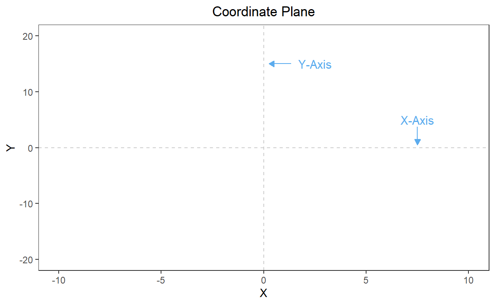
A specific point on the coordinate plane is defined by an ordered pair, which uses the notation (X, Y). In this notation, X is the point’s X coordinate (where it falls horizontally on the coordinate plane), and Y is its Y coordinate (where it falls vertically on the coordinate plane).
Consider the point (3, 11). If we want to graph this point, we go to 3 on the x-axis and 11 on the y-axis and place our point at the spot where they cross:
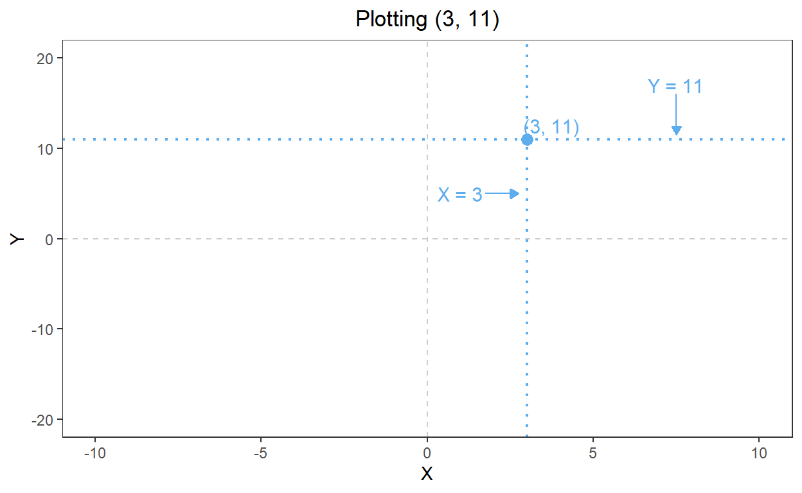
Practice
Try it out! In the plot below, change the values of x
and y to move the point around the coordinate plane.
pointplot +
geom_point(x = 0, y = 0, shape = 19, size = 4, color = "steelblue2")Topic 2: Equation of a Line
Slope-Intercept Form
What if instead of plotting a single point, we want to plot a straight line? Here’s how the equation of that line is frequently written:
\[ y = mx + b \]
This is known as the slope-intercept form, where
y = the y-values of the points on the line (where the points are placed vertically)
m = the slope, or how steep the line is (calculated by dividing the rise, or how far the line travels vertically, by the run, or how far the line travels to the right)
x = the x-values of the points on the line (where the points are placed horizontally)
b = the y-intercept, where the line crosses the y-axis.
Example
For example, say that we have a line defined by this equation:
\[ y = 2x + 5 \]
This line crosses the y-axis at 5 and has a slope of 2 (which means that for every unit we move to the right, we move two units upward). It looks like this when plotted:
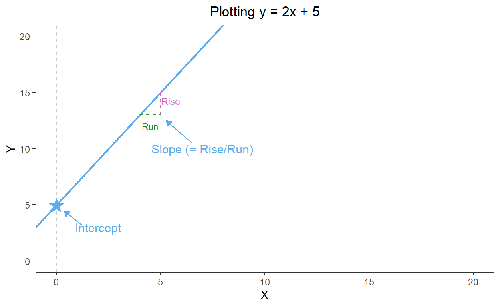
With this equation, we can use values of X to calculate the matching values of Y for points appearing on the line (and vice versa). This means that if we’re interested in the Y value that corresponds with an X value of 3, we would plug 3 in for X in our equation:
\[ \begin{aligned} y &= 2(3) + 5 \\ & = 6 + 5 \\ & = 11 \end{aligned} \]
If we’re interested in the Y value that corresponds with an X value of 4:
\[ \begin{aligned} y &= 2(4) + 5 \\ &= 8 + 5 \\ &= 13 \end{aligned} \]
And for an X value of 5:
\[ \begin{aligned} y &= 2(5) + 5 \\ &= 10 + 5 \\ &= 15 \end{aligned} \]
We can check this visually, too!
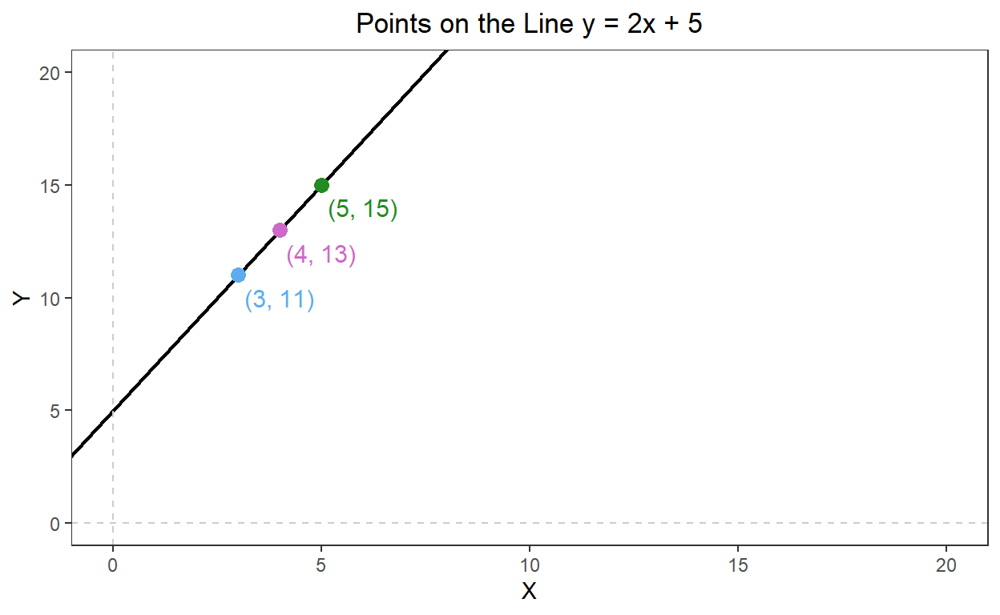
Practice 1
Let’s take a look at lines with different slopes and intercepts. In
the code below, the geom_abline() command adds a line to a
ggplot based on its slope and intercept. Try changing the values of the
slope and intercept arguments to see how the
line changes.
lineplot +
geom_abline(slope = 1, intercept = 1, linewidth = 1, color = "steelblue2")Practice 2
Say we have this equation of a line:
\[ y = -3x + 2 \]
It looks like this when plotted:
How would we fill in the blanks in the code below to plot that line?
lineplot +
geom_abline(slope = ___, intercept = ___, linewidth = 1, color = "steelblue2")We’ll be building on all of this information to estimate and interpret linear regression models.
Topic 3: Overview of Bivariate Regression
General Intuition of Bivariate Regression
We already know that bivariate refers to models or tests with two variables. A bivariate linear regression, then, is a linear regression model with two variables: one dependent variable and one independent variable. These variables are typically continuous.
The general intuition behind bivariate regression is that it takes the following steps:
Create a scatterplot of your two variables, where the dependent variable is on the y-axis and the independent variable is on the x-axis.
Find the line that best fits the data, or the line that comes as close as possible to all of the data points simultaneously.
Find the slope and intercept of that line.
The Population Bivariate Regression Model
Remember the difference between a population and a sample? A population is the entire group that we’re interested in, and a sample is a subset (or smaller portion) of that group.
We’ll start by pretending that we have data for the entire population. In the case of perfect or complete information, we can also perfectly explain or predict the relationship between our two variables of interest.
With population data, the formula for a linear regression model looks very similar to the slope-intercept equation of a line we discussed earlier. It just uses slightly different notation:
\[ Y_i = \alpha + \beta X_i + \epsilon_i \]
With this notation,
\(Y_i\) = The values of our dependent variable
\(\alpha\) = The true population intercept
\(\beta\) = The true population slope
\(X_i\) = The values of our independent variable
\(\epsilon_i\) = Random error
Anything with a subscript of \(i\) in the notation above (\(Y\), \(X\), and \(\epsilon\)) refers to a specific observation, or row in our data set. If a parameter doesn’t have a subscript (\(\alpha\), \(\beta\)), it means there is only one for the entire model—so there is a single intercept value and a single slope value.
The big change from the equation of a line we looked at before and this equation is the addition of \(\epsilon\) (epsilon) on the end. \(\epsilon\) in this model accounts for variation in our dependent variable that isn’t captured by the model.
Even in a situation with perfect information, there will still be times that our data points do not fall directly on our regression line—because social actors like individuals, organizations, and governments all have unique characteristics and behaviors! That’s what this part of the model represents.
The Sample Bivariate Regression Model
However, in social scientific research, we are nearly always working with sample, not population, data. In this case, the model looks slightly different:
\[ \hat{Y}_i = \hat{\alpha} + \hat{\beta} X_i + \hat{\epsilon}_i \]
Do you see the main difference between this model and the population model? It’s the caret symbols (called “hats”) above our \(Y\), \(\alpha\), \(\beta\), and \(\epsilon\).
In this notation,
\(\hat{Y}_i\) = Read as “Y-hat”, these are the values of Y that are predicted by our model
\(\hat{\alpha}\) = Read as “alpha-hat,” this is our estimate of the population intercept
\(\hat{\beta}\) = Read as “beta-hat,” this is our estimate of the population slope
\(X_i\) = These are the observed values of our independent variable
\(\hat{\epsilon}\) = Read as “epsilon-hat,” this is the calculated error term (or our residuals)
This is the model that we’ll be focusing on this semester.
Residuals
Since they’re the big difference between the equation of a line that we discussed at the beginning of this tutorial and our regression model, it’s worth discussing residuals in more detail.
A residual is the vertical distance between an observed data point (an observation in our data set) and the value of the dependent variable predicted by our regression line for that observation.
They are calculated by subtracting each predicted value of Y (\(\hat{Y}_i\)) from the associated observed value of Y (\(Y_i\)):
\[ \hat{\epsilon} = Y_i - \hat{Y}_i \]
This means that points falling directly on our line with have a residual of zero, points above our regression line will have positive residuals, and points below our regression line will have negative residuals. The average of our residuals will always be zero if we’ve correctly estimated a line of best fit.
Visualizing a Regression Model
We can visualize a regression line like this, where the independent variable is on the X-axis, and the dependent variable is on the Y-axis:
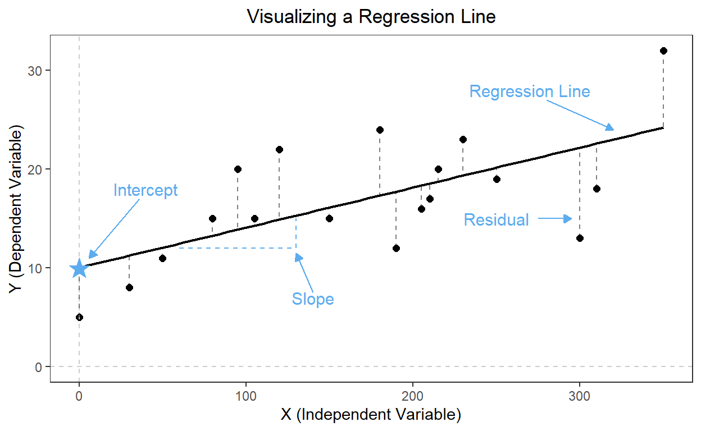
Each of the points represents the values of X and Y for a single observation (or row in our dataset). The solid black line (labeled “Regression Line”) is the straight line that comes as close as possible to each of our data points simultaneously, or the line that best fits our data. Our line crosses the Y-axis at \(\hat{\alpha}\) (marked with a star and labeled “Intercept”). \(\hat{\beta}\) is the slope of the line, or our estimate of the relationship between X and Y. The dashed lines between the points and our regression line represent the residuals.
Example
Say that we’re interested in understanding when people like “big business” (large business corporations) more or less, and we think that a big driver is their ideology (how liberal or conservative they are).
In 2020, the American National Election Survey (ANES) asked its respondents to rate the degree to which they liked big business on a scale from 0 to 100, where 0 meant they didn’t like it at all, 50 meant they were completely neutral, and 100 meant that they liked it as much as possible. They also asked respondents to self-identify their ideology on a scale of 1 (most liberal) to 7 (most conservative).
On average, we expect that individuals with a more conservative ideology will favor big business more than individuals with a more liberal ideology. Here’s the formal way we’re going to phrase our hypotheses:
Null Hypothesis (\(H_0\)): There is NO relationship between ideology and ratings of big business.
Alternative Hypothesis (\(H_A\)): There IS a relationship between ideology and ratings of big business.
Here’s a scatterplot of the data:
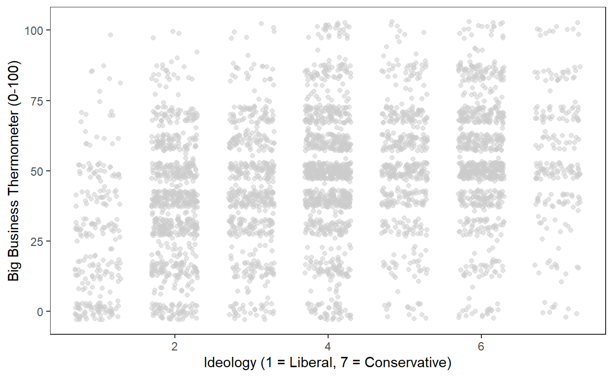
We estimate a linear regression model where the score for big business is our dependent variable and ideology is our independent variable, and we determine that the line of best fit for our results is described by this equation:
\[ \hat{Y}_i = 29.0 + 4.4 X_i + \hat{\epsilon}_i \]
From this, we can see that the intercept of our regression line is 29.0, and the slope is 4.4. That means that our line crosses the y-axis at 29.0, and for each 1-unit increase in ideology (moving from left to right across our plot), our line predicts a 4.4-point increase in approval of big business, on average.
Here’s what that line of best fit looks like when we add it to our scatterplot—it’s the solid blue line:
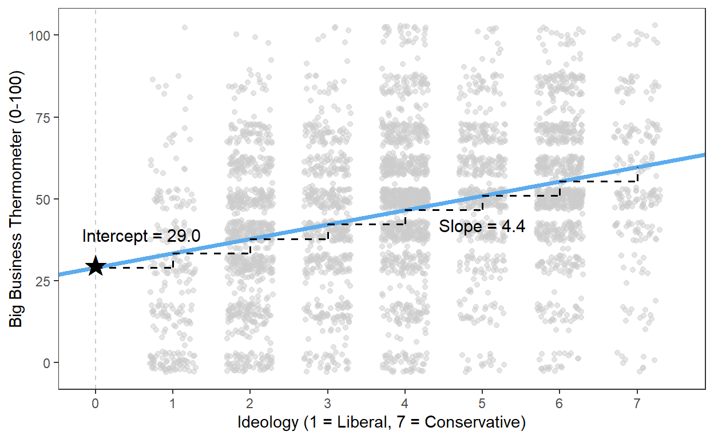
Since the slope of our line is positive, it suggests a positive relationship between our two variables—as the ideology scale increases, so does the big business scale. This is starting to provide evidence to allow us to reject the null hypothesis.
In the next topic, we’ll discuss the method we used to estimate this model, Ordinary Least Squares (OLS).
Topic 4: Ordinary Least Squares (OLS)
Introduction to OLS
In the previous topic, we discussed the general intuition behind linear regression models. Now, let’s get into more specific detail about how we estimate these models.
The most common approach to estimating linear regression models is with Ordinary Least Squares (OLS). This approach calculates the line of best fit for our data by minimizing the sum of squared residuals, or the variance in our dependent variable that isn’t explained by the model. (This value is calculated by calculating the residual for each observation going into our model, squaring all of the residuals, and then adding them together—hence, the name.)
Remember the general format for a linear regression model?
\[ \hat{Y}_i = \hat{\alpha} + \hat{\beta} X_i + \hat{\epsilon}_i \]
Any method for estimating this model needs to provide estimates of \(\hat{\beta}\) and \(\hat{\alpha}\).
For a bivariate linear regression model, OLS calculates \(\hat{\beta}\) by multiplying the correlation coefficient of the two variables by the ratio of the standard deviation of each variable, like this:
\[ \hat{\beta} = r_{x,y} \times \frac{s_y}{s_x} \]
And it calculates \(\hat{\alpha}\) by multiplying \(\hat{\beta}\) and the average of the independent variable (\(X\)) and then subtracting the product from the average of the dependent variable (\(Y\)):
\[ \hat{\alpha} = \bar{Y} - \hat{\beta}\bar{X} \]
Practice: OLS Calculations
In the previous topic, you saw the regression line describing the relationship between respondents’ ideology and their ratings of big business. It had this equation:
\[ \hat{Y}_i = 29.0 + 4.4 X_i + \hat{\epsilon}_i \]
Let’s see if we can calculate that \(\hat{\beta}\) and \(\hat{\alpha}\)!
First, we need to calculate \(\hat{\beta}\), which needs three things:
The correlation coefficient for
businessandideologyThe standard deviation for
businessThe standard deviation for
ideology
Remember that the command for calculating a correlation coefficient
is cor(), and the command for calculating a standard
deviation is sd(). Our variables are stored in a data frame
called anes.
Using the practice space below, can you calculate the \(\hat{\beta}\) of 4.4 for these variables?
cor(___, ___) * cor(___, ___) * (sd(___) / sd(___))cor(anes$business, anes$ideology) * (sd(anes$business, na.rm = T) / sd(anes$ideology, na.rm = T))Now, let’s calculate \(\hat{\alpha}\), which we know is 29.0. Just like with \(\hat{\beta}\), this calculation needs three things:
The mean of
business\(\hat{\beta}\) (which is 4.4)
The mean of
ideology
mean(___, na.rm = T) mean(___, na.rm = T) - (4.4 * ___)mean(anes$business, na.rm = T) - (4.4 * mean(anes$ideology, na.rm = T))Nice work!
Thankfully, we don’t typically need to calculate our own \(\hat{\alpha}\) and \(\hat{\beta}\), because R will do this for us. Click into the next topic to see how.
Topic 5: Performing Bivariate Regressions in R
To run a linear regression model in R, we need to do the following:
Create an object by naming it and using the assignment arrow (
<-).Use the
lm()command to specify that we’re running a linear model.Identify our variables, using the format
DV ~ IV, where DV is our dependent variable and IV is our independent variable.Identify our data frame.
In the example code below, we have created a model object called
mod1, which is a linear model (lm()) that has
the dependent variable business and the independent
variable ideology, both of which are drawn from the data
frame called anes. We can either use the data
argument or use the dataframe$column notation to specify
the data frame we’re using.
The summary() command shows us our model results when we
put our model object’s name in the parentheses, and the
nobs() command gives us the number of
observations going into our model (when run on our
model object, mod1. It’s important to note that this won’t
necessarily be the same as the number of observations in our data frame,
because the lm() command only draws on observations that
aren’t missing data for any of the variables in our model. So make sure
to use the nobs() command to get this number!
mod1 <- lm(business ~ ideology, data = anes)
# OR
mod1 <- lm(anes$business ~ anes$ideology)
summary(mod1)##
## Call:
## lm(formula = anes$business ~ anes$ideology)
##
## Residuals:
## Min 1Q Median 3Q Max
## -59.762 -12.209 2.179 13.403 66.567
##
## Coefficients:
## Estimate Std. Error t value Pr(>|t|)
## (Intercept) 29.0449 0.8551 33.97 <2e-16 ***
## anes$ideology 4.3881 0.1988 22.07 <2e-16 ***
## ---
## Signif. codes: 0 '***' 0.001 '**' 0.01 '*' 0.05 '.' 0.1 ' ' 1
##
## Residual standard error: 21.46 on 4198 degrees of freedom
## Multiple R-squared: 0.104, Adjusted R-squared: 0.1038
## F-statistic: 487.2 on 1 and 4198 DF, p-value: < 2.2e-16There’s a lot of information packed into those model results! Where should we focus our attention?
Call Section: At the top of our results, R prints the code that we used to run our model. We can see again that our dependent variable is
business, because it appears before the~, and our independent variable isideology, because it appears after the~.Coefficients Section: This section contains most of the most important information we need from our model results.
Estimate: This column has our \(\hat{\alpha}\) and \(\hat{\beta}\). \(\hat{\alpha}\) (29.0) appears in the row marked Constant, and \(\hat{\beta}\) (4.4) appears in the row marked with our independent variable, Ideology. If they look slightly different than the numbers we’ve referenced above, it’s just due to rounding.
Std. Error: This column has the standard errors of each estimate (our \(\hat{\alpha}\) (0.855) and \(\hat{\beta}\)) (0.199). Standard errors represent the uncertainty of each of our estimates. They’re always positive, and smaller standard errors are better. It represents how much the estimates would be expected to change if we repeated our analysis over and over again with different samples from the same population. We don’t typically interpret them much, but we do usually report them.
t value: This column reports the t-scores for each of our estimates. These values are calculated by dividing the estimate by the standard error. In general, t-scores that are more positive than 1.96 or more negative than -1.96 are statistically significant (at the 95 percent confidence level). Both of our t-scores (33.97 for our interecept and 22.07 for our slope) indicate statistical significance.
Pr(>|t|): This column reports the p-values associated with each t-score. Remember that because we’re working with a 95 percent confidence interval, p-values of less than 0.05 will indicate statistically significant results. These are calculated from our t-scores, so they’ll never disagree with them. That means that we shouldn’t be surprised to see that both of our p-values are less than 0.05 (<2e-16 for each, which means that the value is basically 0).
Stars: To help us quickly see which estimates are statistically significant, R provides stars for significant results. You’ll see different numbers of stars for different p-values, but for our purposes, anything with one or more stars will be considered statistically significant, because those are the ones with a p-value of less than 0.05 (at least).
Multiple R-Squared (\(R^2\)): This value tells us the proportion of variance of our dependent variable that is explained by our model. In a bivariate model, this is equal to the correlation coefficient for our two variables (\(r\)) squared. \(R^2\) ranges from 0 to 1, and higher values are typically considered better. Our \(R^2\) value of 0.104 tells us that we have explained 10.4 percent of the variance of
business. However, this number is most useful when comparing different models performed on the same data.Number of Observations (N): It’s also standard to report the number of observations that went into our model. Importantly, this number won’t always match with the number of observations in our data frame, so we have to produce it with a separate command (
nobs()), which we run on our model object (mod1). This model used 4,200 observations.
Practice
Now, you try it! Say that instead of ideology, our
independent variable is age. Write the code for this model
below; you can call it mod2. Don’t forget to use the
summary() command to ask R to show the model results and
the nobs() command to get the number of observations.
mod2 <- lm(business ~ age, data = anes)
# OR
mod2 <- lm(anes$business ~ anes$age)
summary(mod2)
nobs(mod2)Can you find the \(\hat{\alpha}\)
(intercept), \(\hat{\beta}\) (slope),
N, and \(R^2\) for
mod2?
Topic 6: Converting R Regression Output to a Table
In the previous topic, we looked at performing bivariate regression models in R and explored a bit of the output R gives us for these models. While this is the way that regression output looks in R, if we want to present our results to anyone (in a paper, presentation, etc.), we need to convert them into a table. When we read about model results in published works, they will also be presented in tables. So it’s an important skill to know how results in R and in tables are connected to each other!
As a reminder, here are our results for mod1, where our
dependent variable is business and our independent variable
is ideology.
mod1 <- lm(business ~ ideology, data = anes)
summary(mod1)##
## Call:
## lm(formula = business ~ ideology, data = anes)
##
## Residuals:
## Min 1Q Median 3Q Max
## -59.762 -12.209 2.179 13.403 66.567
##
## Coefficients:
## Estimate Std. Error t value Pr(>|t|)
## (Intercept) 29.0449 0.8551 33.97 <2e-16 ***
## ideology 4.3881 0.1988 22.07 <2e-16 ***
## ---
## Signif. codes: 0 '***' 0.001 '**' 0.01 '*' 0.05 '.' 0.1 ' ' 1
##
## Residual standard error: 21.46 on 4198 degrees of freedom
## Multiple R-squared: 0.104, Adjusted R-squared: 0.1038
## F-statistic: 487.2 on 1 and 4198 DF, p-value: < 2.2e-16nobs(mod1)## [1] 4200As a table, these results will look something like this, instead:
| Big Business Thermometer (0-100) | |
| Model 1 | |
|---|---|
| Ideology (1-7; 7 = Conservative) | 4.388* |
| (0.199) | |
| Constant | 29.045* |
| (0.855) | |
| N | 4200 |
| R-squared | 0.104 |
| ∗ p < 0.05 | |
Where can we find all of our important values in this table, and where did they come from in R?
Dependent variable (\(Y\)): The dependent variable of a model will typically appear somewhere at the top. In this table, it’s in the heading at the very top, which tells us that the big business thermometer (which ranges from 0 to 100) is our dependent variable. We can match this with the Call section in our model results in R.
Independent variable (\(X\)): The independent variable(s) of the model will be named in a column along the left-hand side of the table. If there is more than one independent variable (more on this when we turn to multiple regression), the most important or interesting independent variable will frequently be named first. Here, our only independent variable is ideology, which ranges from 1-7, with higher values meaning more conservative. We can also match this with the Call section in our model results in R.
Intercept/Constant (\(\hat{\alpha}\)): The estimated intercept of our model (29.0) appears in the row marked Constant in our table. We got this value from the Coefficients section of our model results in R, in the column marked Estimate and the row marked Intercept.
Slope/Coefficient Estimate (\(\hat{\beta}\)): The estimated slope of our model (4.4) appears in the row marked Ideology (1-7) in our table. We got this value from the Coefficients section of our model results in R, in the column marked Estimate and the row marked ideology. If we had multiple independent variables, each would be associated with their own slopes in R and in our table.
Standard Errors: The numbers in the table with parentheses around them are the standard errors associated with each estimate. The standard error for our intercept is 0.855, and the standard error for our slope is 0.199. These come from the Std. Error column of the Coefficients section in R.
Statistical Significance: Statistically significant estimates (those with p-values of less than 0.05 in R) are marked with 1 star in this table. Note that it’s the estimates themselves that get stars, not their standard errors, and the table note tells us what the stars mean.
Number of Observations: The number of observations going into our model (4,200) is called N in this table. We produced this with the
nobs()command in R.R-squared: Our R-squared of 0.104 is labeled \(R^2\) in this table. This is the Multiple R-Squared value from R.
In the next topic, we’ll turn to interpreting these values in more detail.
Practice
Your turn! Remember these R results for mod2?
mod2 <- lm(business ~ age, data = anes)
summary(mod2)##
## Call:
## lm(formula = business ~ age, data = anes)
##
## Residuals:
## Min 1Q Median 3Q Max
## -52.951 -13.606 1.315 14.566 58.832
##
## Coefficients:
## Estimate Std. Error t value Pr(>|t|)
## (Intercept) 37.10556 1.14908 32.292 <2e-16 ***
## age 0.20314 0.02383 8.526 <2e-16 ***
## ---
## Signif. codes: 0 '***' 0.001 '**' 0.01 '*' 0.05 '.' 0.1 ' ' 1
##
## Residual standard error: 22.48 on 4198 degrees of freedom
## Multiple R-squared: 0.01702, Adjusted R-squared: 0.01679
## F-statistic: 72.7 on 1 and 4198 DF, p-value: < 2.2e-16nobs(mod2)## [1] 4200How would we fill in each of the missing values in the table below?
| Big Business Thermometer (0-100) | |
| Model 2 | |
|---|---|
| Age | A |
| (B) | |
| Constant | C |
| (D) | |
| N | E |
| R.squared | F |
Topic 7: Interpreting Bivariate Regression Output
Now that we’ve covered the mechanics of running bivariate linear regression models, let’s put this knowledge into the context of our hypothesis testing framework and work on interpreting our results.
Step 1: Null and Alternative Hypotheses
To recap, our working example for this tutorial has been the relationship between individuals’ ideologies and their feelings about big business. In general, people with more conservative ideologies favor big business more than people with more liberal ideologies. Formally, we had these hypotheses:
Null Hypothesis (\(H_0\)): There is NO relationship between ideology and ratings of big business.
Alternative Hypothesis (\(H_A\)): There IS a relationship between ideology and ratings of big business.
Step 2: Hypothesis Test
We ran a bivariate regression model to test this relationship and got the results in the table below.
| Big Business Thermometer (0-100) | |
| Model 1 | |
|---|---|
| Ideology (1-7; 7 = Conservative) | 4.388* |
| (0.199) | |
| Constant | 29.045* |
| (0.855) | |
| N | 4200 |
| R-squared | 0.104 |
| ∗ p < 0.05 | |
Steps 3 and 4: Compare Results to a Set Standard and Draw Conclusions
In the table above, we can see that our coefficient estimate for ideology (\(\hat{\beta}\)) got a star, so its p-value is less than 0.05. That means that we can reject the null hypothesis—there does seem to be a relationship between our two values!
Let’s go into more detail about how to interpret these results.
The Intercept (\(\hat{\alpha}\))
Remember that in a graph, the y-intercept (or just “the intercept”) is where a line crosses the y-axis, which occurs when \(X\) equals 0. That means that the intercept (our \(\hat{\alpha}\)) is the predicted value of \(Y\) (our dependent variable) when \(X\) (our independent variable) equals 0.
We can show this mathematically, too. Here’s a stripped-down version of our regression model:
\[ \hat{Y}_i = \hat{\alpha} + \hat{\beta} X_i \]
What happens when we plug in 0 for X?
\[ \begin{aligned} \hat{Y}_i &= \hat{\alpha} + \hat{\beta} (0) \\ &= \hat{\alpha} + 0 \\ & = \hat{\alpha} \end{aligned} \]
When we’re interpreting this value, we always follow this fill-in-the-blank format: “[The intercept] is the predicted value of [dependent variable] when [independent variable] is zero.” In our working example, our value of \(\hat{\alpha}\) is 29.0. That means that the predicted value of the big business thermometer when our ideology score is 0 is 29.0.
“But wait,” you might be thinking, “our ideology variable only ranges between 1 and 7. It isn’t possible for someone to have an ideology score of 0!” And you’d be right! How meaningful this value is for our model interpretation is going to be dependent on the specific data we’re working with. In this case, this isn’t a meaningful value, because an individual with an ideology value of 0 will not exist in our data—they can’t. But we still have to have an intercept value to estimate our regression model.
The Slope (\(\hat{\beta}\))
In our discussion of line graphs, we saw that the slope of a line describes its angle, or how much the line tilts up or down. More formally, it’s described as the change in \(Y\) (either an increase or a decrease) that’s associated with a 1-unit increase in \(X\). In order to draw a straight line, every time we move one unit to the right, we have to move the same number of units up or down.
We can see how this works mathematically, too. When we were trying to understand the intercept, we plugged in 0 for \(X\). What happens when we plug in 1, instead (making \(X\) increase by 1)?
\[ \begin{aligned} \hat{Y}_i &= \hat{\alpha} + \hat{\beta} (1) \\ &= \hat{\alpha} + 1\hat{\beta} \\ \end{aligned} \]
And when we plug in 2 for \(X\), increasing \(X\) by 1 again?
\[ \begin{aligned} \hat{Y}_i &= \hat{\alpha} + \hat{\beta} (2) \\ &= \hat{\alpha} + 2\hat{\beta} \\ \end{aligned} \]
Each time we increase \(X\) by 1, our value of \(Y\) increases by another \(\hat{\beta}\).
When we’re formally interpreting \(\hat{\beta}\) in a bivariate regression model, we use this format: As [independent variable] increases by 1 unit, [dependent variable] [increases/decreases] by [\(\hat{\beta}\)] units, on average. Whether we fill in “increases” or “decreases” there depends on whether or not \(\hat{\beta}\) is positive (“increases”) or negative (“decreases”). We add the “on average” part because this number may not perfectly describe each observation in our model; that’s why we have residuals. It’s describing the average way that these variables move together across all of our different observations.
In our example, the value of \(\hat{\beta}\) is 4.4. That means we would interpret it this way: As ideology increases by 1 unit, the rating of big business increases by 4.4 units, on average.
N
N is perhaps the most straightforward of the values to interpret. As
we’ve covered in previous topics, it refers to our sample size, or the
number of observations going into our model. In our
example, the N is 4,200, so there were 4,200 rows in our data frame with
complete data (no NAs) that went into estimating our
model.
\(R^2\) (R-squared)
Finally, we have the \(R^2\) value, which represents the proportion of the variance in our dependent variable that is explained by our model. The potential values of \(R^2\) range between 0 and 1, since it’s a proportion, and higher values represent more of the variance being explained. (It may help you to remember this range if you remember that in a bivariate model, it is equal to the correlation coefficient squared. Since correlation coefficients range between -1 and 1, \(R^2\) must range between 0 and 1.) If we want a percentage value, we just multiply it by 100.
We can think about it this way: Whatever our dependent variable is, it can take on a variety of values. In our example, it’s the big business thermometer, which can take on any whole number between 0 and 100. From the scatterplot of our data, shown again below, we know that while there is a positive relationship between our variables, our observations don’t fall on a perfectly straight line. Much like the correlation coefficient, the \(R^2\) value tells us how close to a straight line they do fall—how much explanatory power we’ve provided for those different values (and how much more we still need to find).
In our example, the \(R^2\) value is 0.104. That means that we have explained 10.4 percent of the variance in our dependent variable, the ratings of big business.
That being said, it’s rarely a good idea to read too much into one \(R^2\) value on its own. Is an \(R^2\) value of 0.10 good? It depends! What if no one had ever done any research into how people feel about big business before? Surely explaining 10 percent is better than not explaining anything at all. However, if we have a ton of research on people’s opinions on this matter and existing models explain 50 or 60 percent of that variance, then 10 percent feels very weak.
\(R^2\) is most informative when we have nested models, or multiple slightly different models run on the same data, and we want to compare them to see which one best fits our data. The model with the highest \(R^2\) value will be the one that best fits our data, or the one with the most explanatory power.
Practice
Let’s apply all of this to the model you’ve been running,
mod2! As a reminder, here is the table of results for that
model:
| Big Business Thermometer (0-100) | |
| Model 2 | |
|---|---|
| Age | 0.203* |
| (0.024) | |
| Constant | 37.106* |
| (1.149) | |
| N | 4200 |
| R-squared | 0.017 |
| ∗ p < 0.05 | |
Topic 8: Visualizing Bivariate Regression Models
A final step in communicating the results of regression models is visualizing them. In general, we’re going to start by making a scatterplot of our data, with our independent variable on the x-axis and our dependent variable on the y-axis.
We can use either geom_point() or
geom_jitter() to make this plot. They’re both scatterplots,
but geom_jitter() is useful when a lot of our points would
otherwise be plotted directly on top of each other, making it difficult
to view the relationship between our variables. This command adds tiny
bits of random distance to each of our observations, making the points
spread out enough to tell where values are clustering together.
For example, here’s a scatterplot of the big business thermometer and
ideology that uses geom_point():
ggplot(data = anes, aes(x = ideology, y = business)) +
geom_point(color = "grey80") +
theme_bw() +
theme(panel.grid = element_blank()) +
scale_x_continuous(limits = c(-.1, 7.5), breaks = seq(0, 7, by = 1)) +
labs(x = "Ideology (1 = Liberal, 7 = Conservative)",
y = "Big Business Thermometer (0-100)") +
geom_vline(xintercept = 0, color = "grey80", linetype = 2)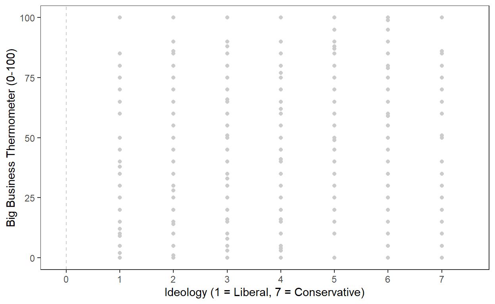
See how there aren’t that many points on the plot, despite there being 4,200 complete observations in our dataset?
Here’s the same graph made with geom_jitter():
ggplot(data = anes, aes(x = ideology, y = business)) +
geom_jitter(width = .3, height = 3, alpha = .5, color = "grey80") +
theme_bw() +
theme(panel.grid = element_blank()) +
scale_x_continuous(limits = c(-.1, 7.5), breaks = seq(0, 7, by = 1)) +
labs(x = "Ideology (1 = Liberal, 7 = Conservative)",
y = "Big Business Thermometer (0-100)") +
geom_vline(xintercept = 0, color = "grey80", linetype = 2)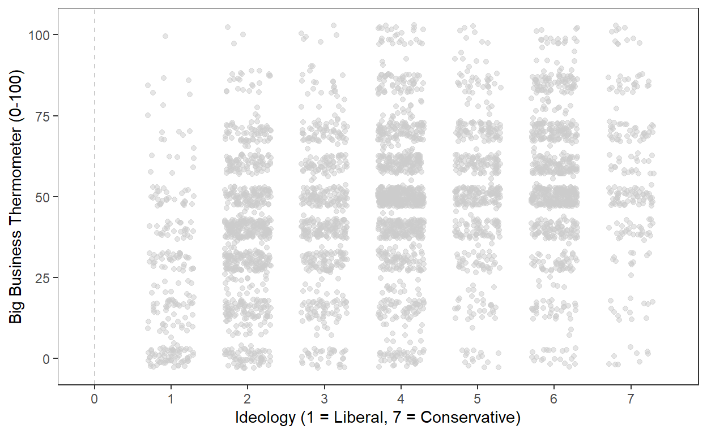
Now we can see all of our points! Inside of the
geom_jitter() command above, the width
argument tells R the maximum amount that it can “jitter,” or move, the
points horizontally, and the height argument tells R the
maximum amount it can jitter the points vertically. They’re different
numbers because they’re in the scale of their respective variables;
width is on the scale of the variable on the x-axis (which
only ranges from 1 to 7), and height is on the scale of the
variable on the y-axis (which ranges from 0 to 100). The
alpha argument makes the points transparent, so we can
better see when multiple points overlap each other.
Both plots have also had some white space added on the left-hand side
(with the limits argument inside of the
scale_x_continuous() command) and a vertical line added at
the y-axis (with the geom_vline() command). This isn’t
necessary, but it will make the intercept of our regression line a bit
easier to see when we add the regression line to the figure.
The main command to add a regression line to a scatterplot is
geom_abline(). This command requires two main arguments,
slope and intercept, which we will pull from
the model we’ve estimated. There are two main ways to go about this. The
first is to hard-code the numbers into the command, by setting
slope equal to 4.4 (our \(\hat{\beta}\)) and intercept
equal to 29.0 (our \(\hat{\alpha}\)).
ggplot(data = anes, aes(x = ideology, y = business)) +
geom_jitter(width = .3, height = 3, alpha = .5, color = "grey80") +
theme_bw() +
theme(panel.grid = element_blank()) +
scale_x_continuous(limits = c(-.1, 7.5), breaks = seq(0, 7, by = 1)) +
labs(x = "Ideology (1 = Liberal, 7 = Conservative)",
y = "Big Business Thermometer (0-100)") +
geom_vline(xintercept = 0, color = "grey80", linetype = 2) +
geom_abline(slope = mod1$coefficients[2], intercept = mod1$coefficients[1],
linewidth = 1.35, color = "steelblue2")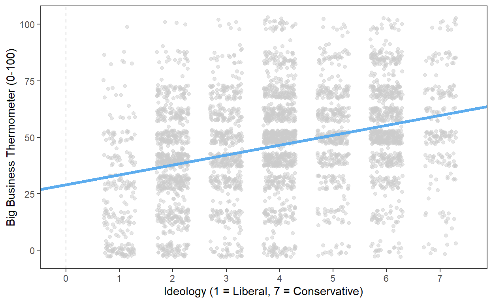
That approach will work, but in general, it’s not ideal to hard-code values like this, because they won’t update automatically if our model estimates change. Instead, we should try to produce these values programmatically. To do this, it will help to know how R thinks about model objects.
In some ways, R treats model objects (like mod1) the
same way it does data frames. For example, let’s look at what happens
when we use the names() command on a model object.
mod1 <- lm(business ~ ideology, data = anes)
names(mod1)## [1] "coefficients" "residuals" "effects" "rank"
## [5] "fitted.values" "assign" "qr" "df.residual"
## [9] "xlevels" "call" "terms" "model"That produces a set of values that are stored inside of
mod1. We can reference these values with a
modelname$parameter syntax very similar to our
dataframe$column syntax.
Here’s what happens when we use this syntax to reference the coefficient estimates:
mod1$coefficients## (Intercept) ideology
## 29.044860 4.388147We can also subset to a specific value within that set of parameters with square brackets and a location number.
# This gives me the alpha-hat of this model:
mod1$coefficients[1]## (Intercept)
## 29.04486# This gives me the beta-hat of this model:
mod1$coefficients[2]## ideology
## 4.388147Thus, we can plug the code above into our plot code to programmatically produce the values we need, instead of hard-coding them:
ggplot(data = anes, aes(x = ideology, y = business)) +
geom_jitter(width = .3, height = 3, alpha = .5, color = "grey80") +
theme_bw() +
theme(panel.grid = element_blank()) +
scale_x_continuous(limits = c(-.1, 7.5), breaks = seq(0, 7, by = 1)) +
labs(x = "Ideology (1 = Liberal, 7 = Conservative)",
y = "Big Business Thermometer (0-100)") +
geom_vline(xintercept = 0, color = "grey80", linetype = 2) +
geom_abline(slope = mod1$coefficients[2], intercept = mod1$coefficients[1],
linewidth = 1.35, color = "steelblue2")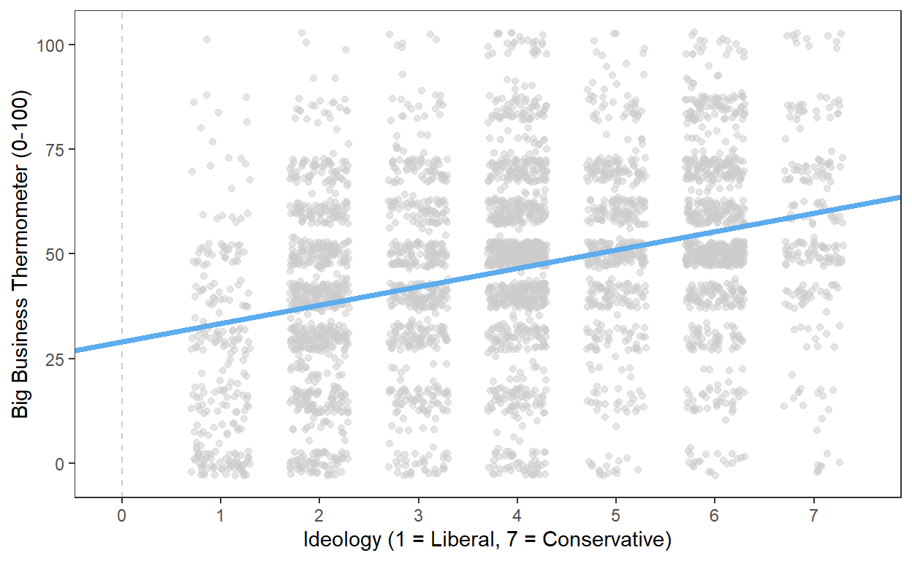
Practice
Your turn! How might you go about visualizing the results from
mod2? Try to code the slope and intercept programmatically,
rather than hard-coding them.
mod2 <- lm(business ~ age, data = anes)# If you're basing your code on the code provided for mod1 above,
# don't forget to change your X variable (and everything related to it,
# which means everything related to the scale for your x-axis).
# You also need to make sure to update the model referenced by your code. mod2 <- lm(business ~ age, data = anes)
ggplot(data = anes, aes(x = age, y = business)) +
geom_jitter(width = 3, height = 3, alpha = .5, color = "grey80") +
theme_bw() +
theme(panel.grid = element_blank()) +
scale_x_continuous(limits = c(-5, 85), breaks = seq(-5, 85, by = 5)) +
labs(x = "Age",
y = "Big Business Thermometer (0-100)") +
geom_vline(xintercept = 0, color = "grey80", linetype = 2) +
geom_abline(slope = mod2$coefficients[2], intercept = mod2$coefficients[1],
linewidth = 1.35, color = "steelblue2")